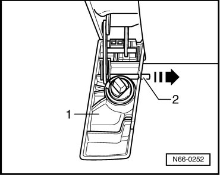
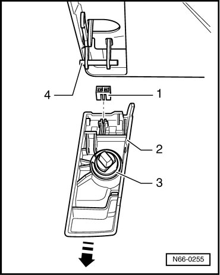
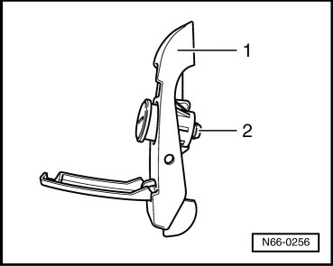
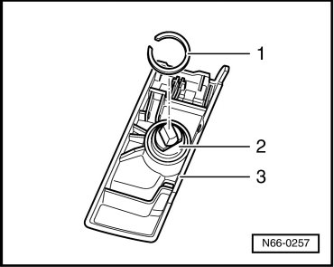

Lock Cylinder For Roof Luggage Carrier Bar
eRoof Luggage Carrier
Lock Cylinder for Roof Luggage Carrier Bar
Removing
- Flip down the lock cover - 1 -.

- Lift positioning pin - 2 - using narrow pliers and slide out in direction of arrow.
- Pull off the securing clip - 1 - and pull the lock cover - 2 - in direction of - arrow - out of the positioning pin - 4 -.

- Pry off retaining ring - 3 - using a small screwdriver.
- Using a rubber hammer, carefully tap lock cylinder - 2 - out of lock cover - 1 - from rear.

Installing
- Insert lock cylinder - 2 - into lock cover - 3 -.

- Then place lock cover - 3 - on a cloth with a hard backing.
- Lay retaining ring - 1 - onto lock cylinder - 2 - and tap retaining ring - 1 - into its installed position using a 19 mm, 1/2" drive, 6pt. socket (VAS 5300/66).
Further installation is in reverse order of removal.